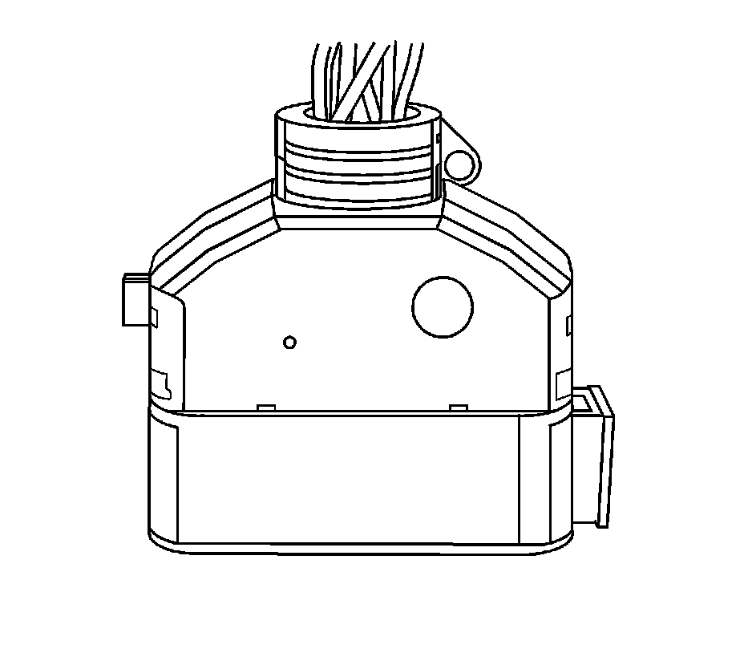
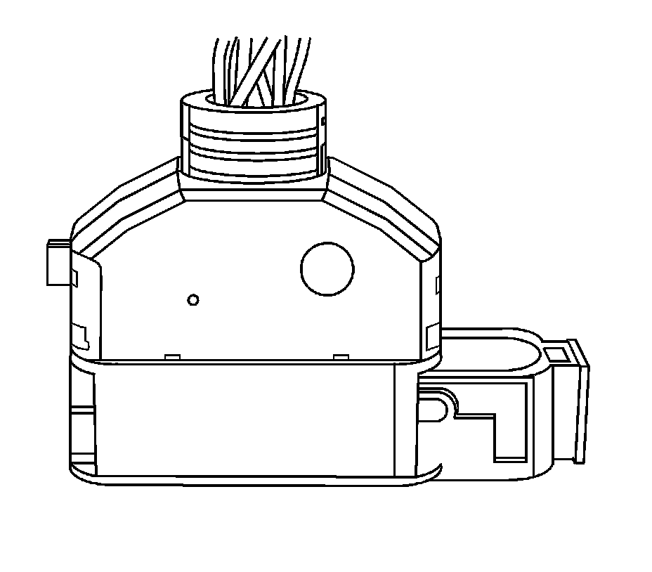
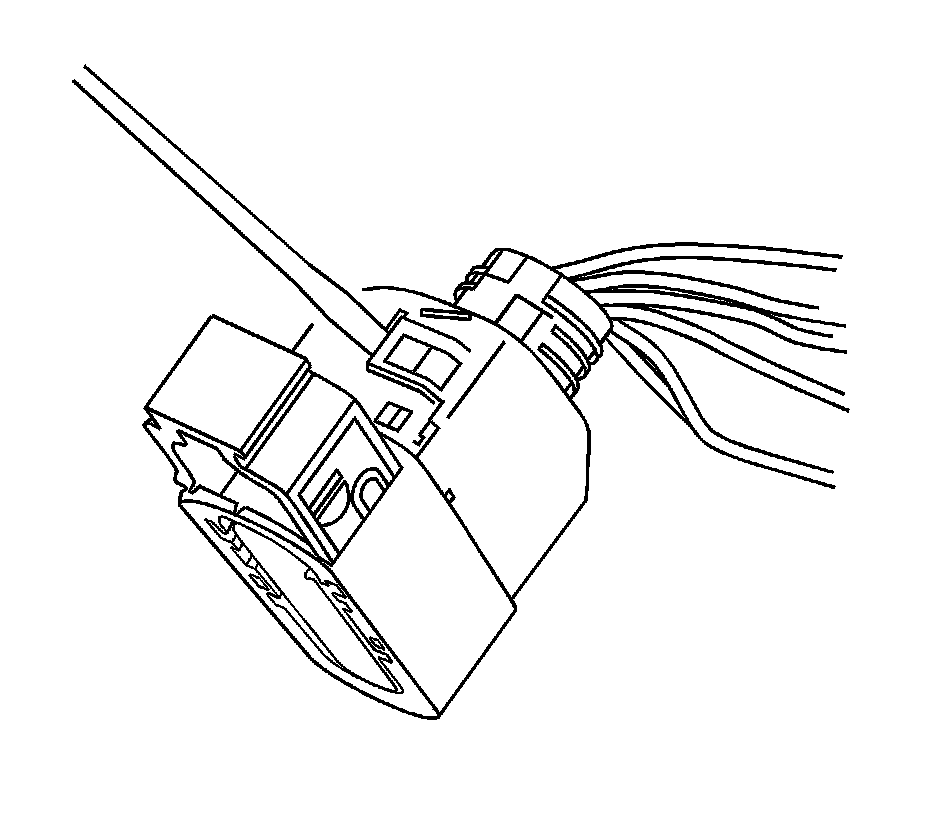
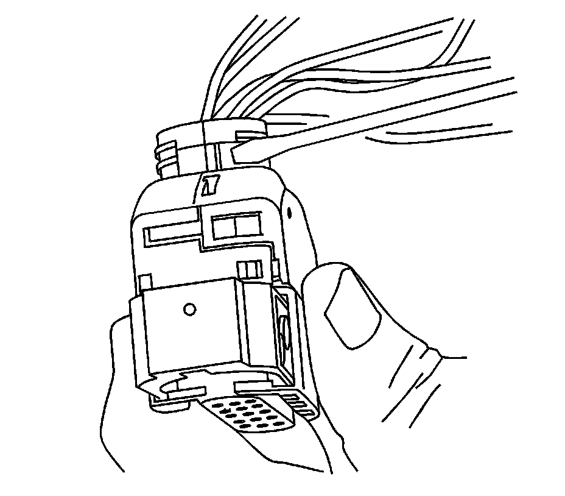
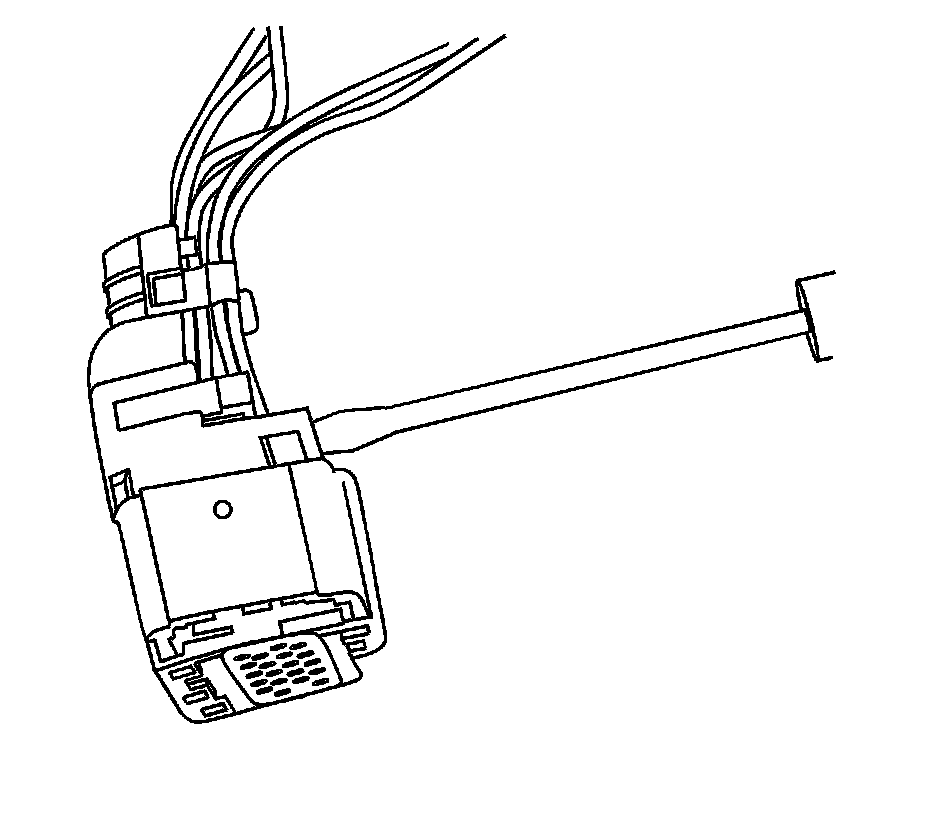
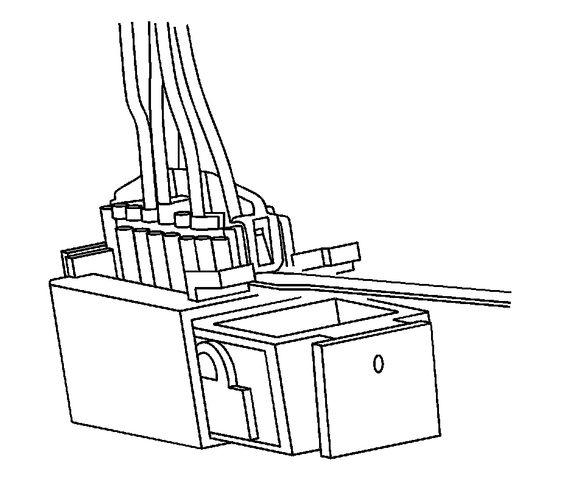
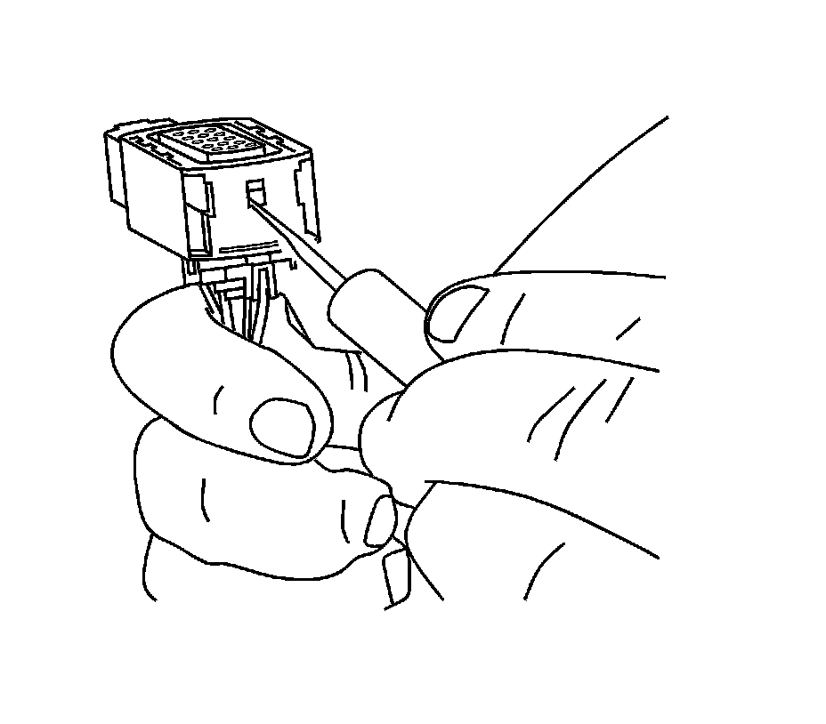
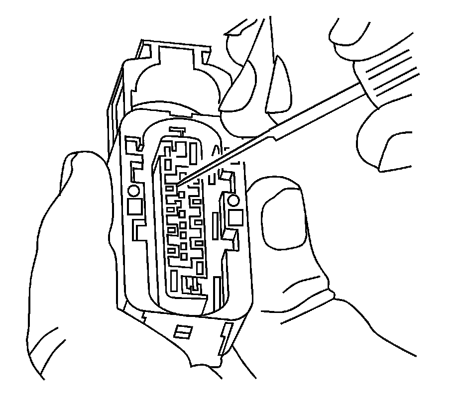

Delphi Connectors (12 Way)
DELPHI CONNECTORS (12-WAY)
TOOLS REQUIRED
J-38125 Terminal Repair Kit
REMOVAL PROCEDURE
Follow the steps below in order to remove terminals from the connector.

1. Locate the lever lock on the wire dress cover. Remove the connector position assurance (CPA) and slide the lever lock away from the connector body.
2. Disconnect the connector from the component.

3. Locate the dress cover locking tabs on the dress cover of the connector. Using a small flat-blade tool release all of the locking tabs.

Release the lower wiredress cover locking tab.

Release the upper wiredress cover locking tab.
4. Once the locks are unlocked, lift the dress cover off.

5. Remove the TPA by inserting a small flat-blade tool into the locking tabs on both sides of the TPA. Gently pry the TPA out of the connector.
IMPORTANT: Always use care when removing a terminal position assurance (TPA) in order to avoid damaging it.

6. Remove the nose piece by inserting a small flat-blade tool into the locking tabs on both sides of the nose piece. Gently pry the nose piece out of the connector.

Insert the J 38125-12A (GM P/N 12094429) tool to release the terminals by inserting the tool into the terminal release cavity. See the release tool cross reference in the Reference Guide of the J-38125 to ensure that the correct release tool is used.

7. While holding the removal tool in place, gently pull the wire out of the back of the connector. Always remember never use force when pulling a terminal out of a connector.
REPAIR PROCEDURE
Use the appropriate terminal and follow the instructions in the J-38125.
Location of the terminal in the repair tray and the proper crimp tool can be found in the appropriate connector end view.